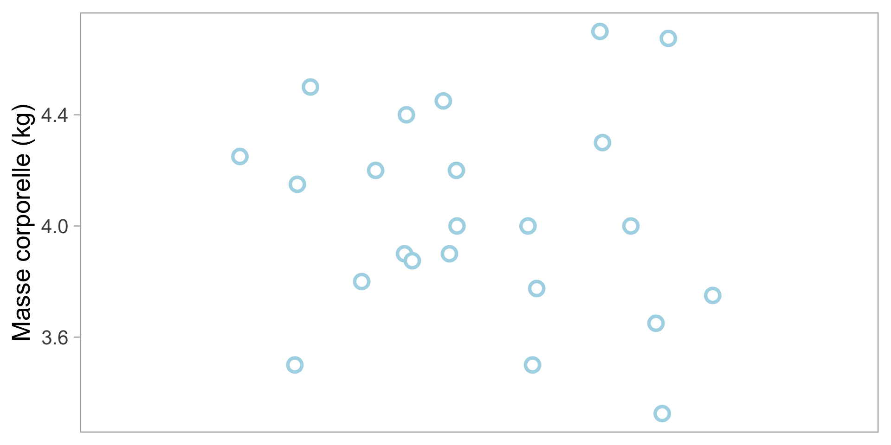
Modèles statistiques
Cours 2
Andreas Eich
Université de la Polynésie française
UE 6.7 Biostatistiques 2
Les bases
Décrire ces données
Les bases
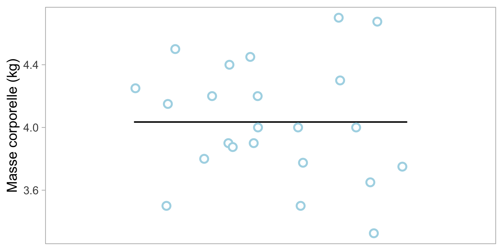
Décrire ces données
Peut être résumé avec la moyenne: \[ \overline{w}=\frac{\sum_{i = 1}^{n}{\textcolor{lightblue}{w_{i}}}}{n} \]
- Additionner tous les points de données
- Diviser par le nombre de points de données
- \(\overline{w}=\) 4.03 kg
- Mais qu’en est-il de la variabilité?
Les bases
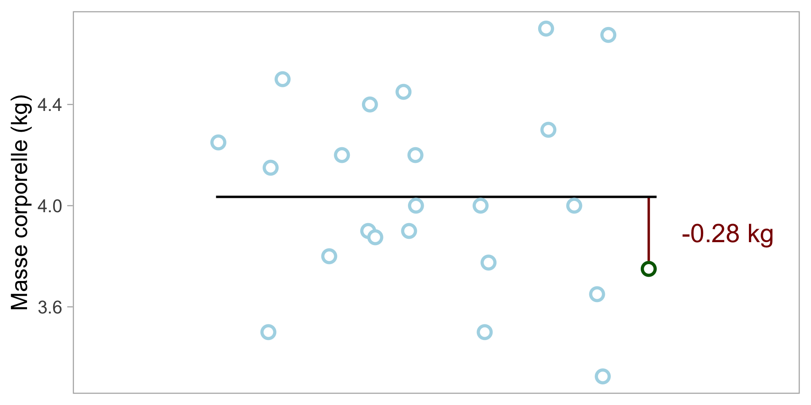
Décrire ces données
Mesure de la variabilité individuelle: Déviation
\[ \textcolor{darkgreen}{w_{i}} - \overline{w} \]
Les bases
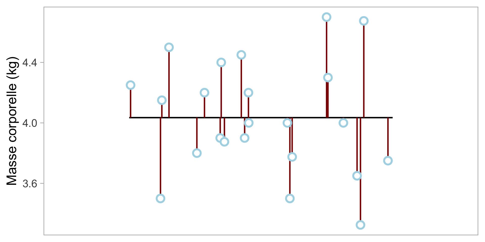
Décrire ces données
Mesure de la variabilité population : Écart-type
\[ \sigma=\sqrt{\frac{\sum_{i = 1}^{n}{(\textcolor{lightblue}{w_{i}} - \overline{w})^2}}{n}} \]
- Pour chaque point de données, calculer la déviation \(\textcolor{lightblue}{w_{i}} - \overline{w}\)
- Élever la valeur au carré (pas de valeurs négatives)
- Additionner les valeurs au carré
- Diviser par le nombre de points de données (\(n\))
- Prendre la racine carrée (inverse du carré)
\(\sigma\) = 0.37 kg
Les bases
Mais, alors quoi? Quel est l’avantage de connaître cela?
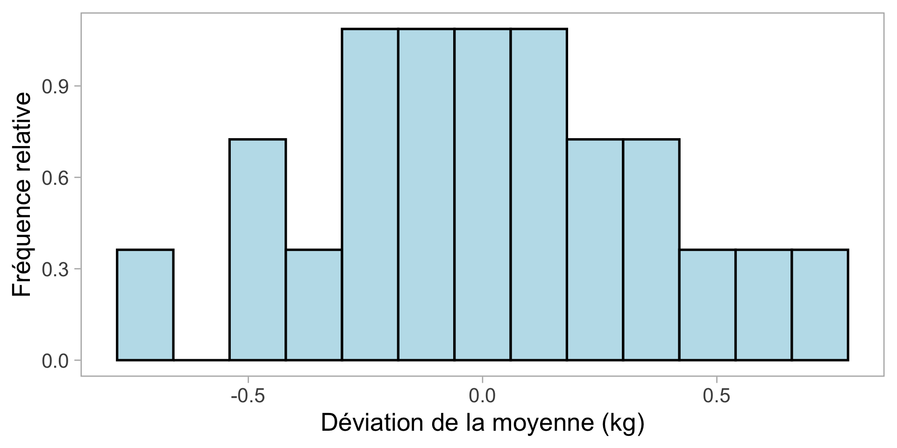
Le bruit n’est pas complètement aléatoire : la plupart des valeurs sont proches de la moyenne, peu s’écartent davantage.
Les bases
Mais, alors quoi? Quel est l’avantage de connaître cela?
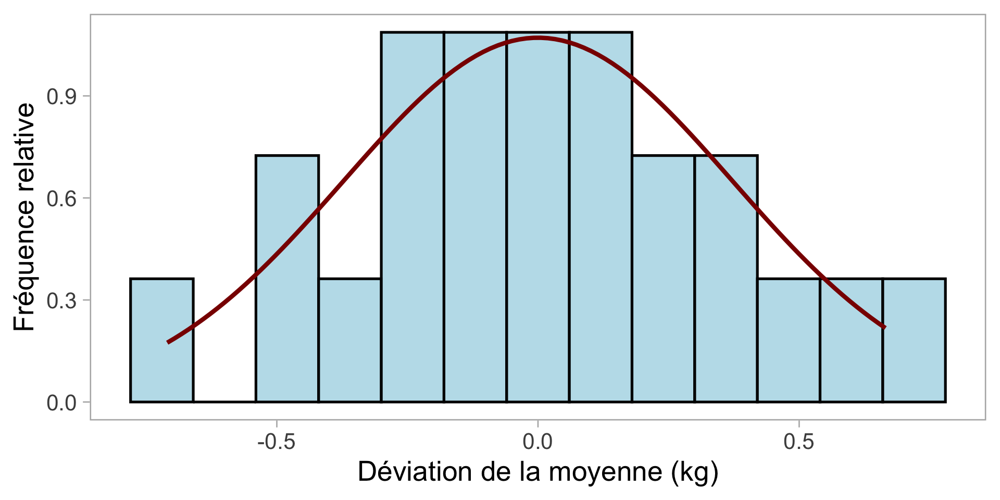
Le bruit n’est pas complètement aléatoire : la plupart des valeurs sont proches de la moyenne, peu s’écartent davantage.
De nombreux processus biologiques suivent une distribution normale
La distribution normale
© Richard McElreath
La distribution normale
© Richard McElreath
La distribution normale
De nombreux processus biologiques peuvent être considérés comme des accumulations de nombreux petits effets aléatoires
Croissance des plantes
- Tête : Obtenir la lumière et l’eau
- Queue : Être couvert par une autre feuille ou mangé par un insecte
→ Au fil des mois, croissance moyenne
Caractères polygéniques
- Chaque gène hérité pour une taille grande ou petite
→ Tous les gènes ensemble : Taille moyenne
La distribution normale
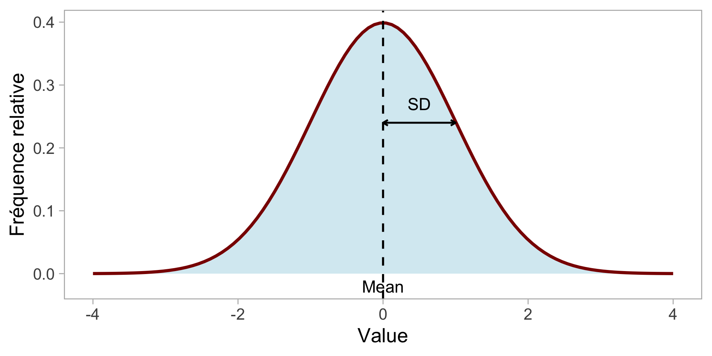
Peut être décrit avec
Moyenne \(\mu\) et
Écart type \(\sigma\)
La distribution normale
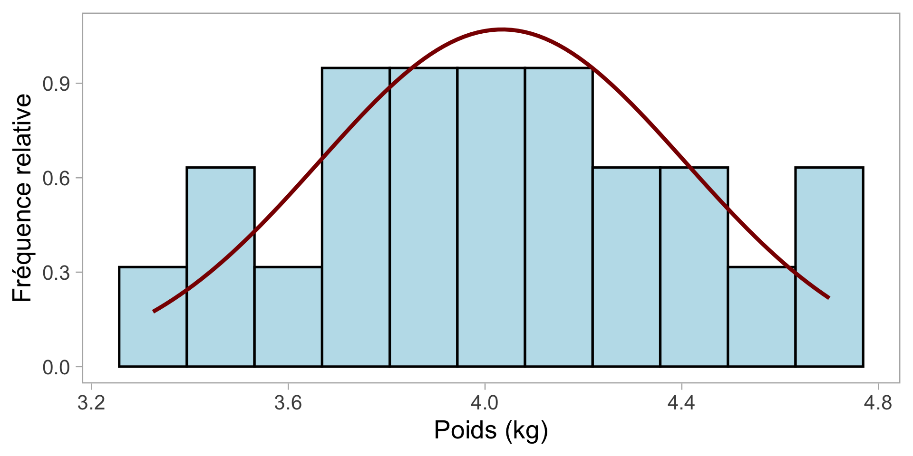
Connaître la distribution nous permet d’en savoir plus sur les données (c.-à-d. différent de 0 ou non ?)
Nous pouvons également simuler de nouvelles données
Il s’agit d’un modèle statistique !
Modèle statistique
Peut être exprimé comme suit
\[ \mathrm{Weight}_i \sim \mathrm{Normal(\mu}_i,~\mathrm{\sigma)} \]
Dans R, cela équivaut à :
Call:
lm(formula = weight ~ 1)
Residuals:
Min 1Q Median 3Q Max
-0.70978 -0.24728 -0.03478 0.24022 0.66522
Coefficients:
Estimate Std. Error t value Pr(>|t|)
(Intercept) 4.03478 0.07767 51.95 <2e-16 ***
---
Signif. codes: 0 '***' 0.001 '**' 0.01 '*' 0.05 '.' 0.1 ' ' 1
Residual standard error: 0.3725 on 22 degrees of freedomTest d’hypothèse
Commencer par le modèle
Nous supposons que les données proviennent d’une population décrite par des paramètres (par exemple, moyenne \(\mu\) et écart type \(\sigma\)).
Hypothèses nulles et alternatives
Hypothèse nulle \(H_0\) : l’hypothèse de référence - aucun effet, aucune différence, ou une valeur spécifique,
par exemple \(\mu = 0\), aucune différence entre les groupes, pente = 0
Hypothèse alternative \(H_1\) : ce que nous conclurions si \(H_0\) semblait incompatible avec les données
par exemple \(\mu \neq 0\)
Test d’hypothèse
Valeur p
La probabilité d’observer un résultat au moins aussi extrême que le nôtre, en supposant que \(H_0\) est vrai.
Règle de décision
Petite valeur p → les données improbables sous \(H_0\) → des preuves contre \(H_0\)
Grande valeur p → les données compatibles avec \(H_0\)
Seuil
- Le seuil arbitraire (niveau alpha) est souvent de 0,05
Valeur P
Définition
Si la vraie masse corporelle moyenne de cette population de manchots était 0 kg, quelle est la probabilité que nous observions une moyenne d’échantillon au moins aussi extrême que celle que nous avons obtenue (en valeur absolue), uniquement en raison de la variabilité d’échantillonnage aléatoire?
Ou plus court
La valeur p est la probabilité d’observer une moyenne éloignée de 0 (ou plus loin), en supposant que la vraie moyenne était en fait 0.
Poids des manchots
Est-il vraiment intéressant de savoir si le poids diffère de 0? Qu’est-ce qui serait plus intéressant?
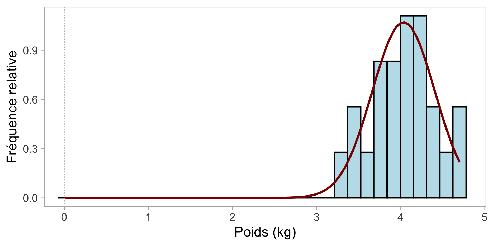
Non ! Mais
Relation entre la longueur et le poids
Différence de poids entre les espèces
Différence de relation entre longueur et poids
sont biologiquement plus intéressants !
Poids et Longueur
Nous avons déjà vu qu’il existe une relation entre le poids et la longueur.
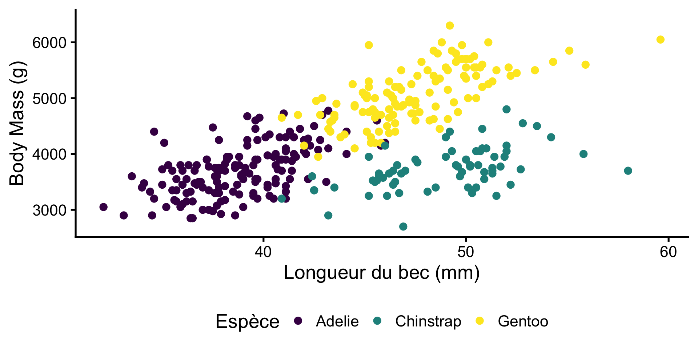
Poids et Longueur
Comment pouvons-nous utiliser un modèle statistique pour ces données?
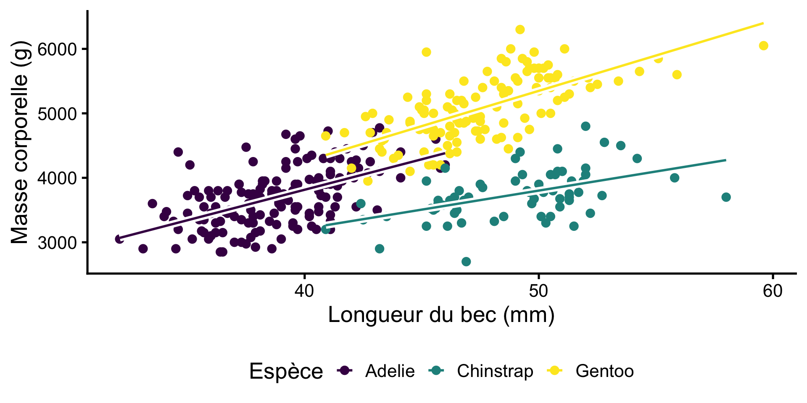
Poids et Longueur
Comment pouvons-nous utiliser un modèle statistique pour ces données?

Un tel modèle pourrait être utile pour
Tester si cette relation est statistiquement significative
Estimer le poids en fonction de la taille
Poids et Longueur
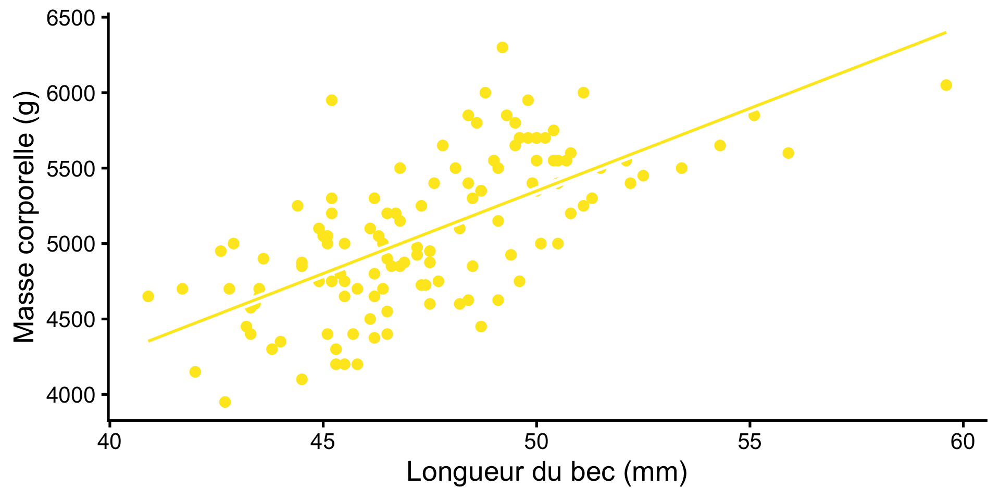
Mais pas à pas !
Modèle de relation pour les manchots Gentoo
- Response variable: Masse corporelle
- Explanatory variable: Longueur du bec
Avant
\[ \mathrm{Weight}_i \sim \mathrm{Normal(\mu}_i,~\mathrm{\sigma)} \\ \]
Après
\[ \begin{align} \mathrm{Weight}_i \sim \mathrm{Normal(\mu}_i,~\mathrm{\sigma)} \\ \mu_i = a + b \cdot \mathrm{billlength}_i \end{align} \]
\(a\) est l’ordonnée à l’origine
\(b\) est la pente
Poids et Longueur
En R:
Pour afficher les coefficients :
Call:
lm(formula = body_mass_g ~ bill_length_mm, data = data_gentoo)
Residuals:
Min 1Q Median 3Q Max
-756.8 -269.1 -26.7 250.4 1126.3
Coefficients:
Estimate Std. Error t value Pr(>|t|)
(Intercept) -123.83 526.05 -0.235 0.814
bill_length_mm 109.46 11.05 9.905 <2e-16 ***
---
Signif. codes: 0 '***' 0.001 '**' 0.01 '*' 0.05 '.' 0.1 ' ' 1
Residual standard error: 376.2 on 121 degrees of freedom
(1 observation deleted due to missingness)
Multiple R-squared: 0.4478, Adjusted R-squared: 0.4432
F-statistic: 98.12 on 1 and 121 DF, p-value: < 2.2e-16\[ \begin{align} \mathrm{Weight}_i \sim \mathrm{Normal(\mu}_i,~\mathrm{\sigma)} \\ \mu_i = a + b \cdot \mathrm{billlength}_i\\ \mu_i = -27.9 + 107.6 \cdot \mathrm{billlength}_i \end{align} \]
Valeur \(R^2\)
\(R^2\) est la proportion de la variation de la variable réponse qui est expliquée par les prédicteurs dans le modèle linéaire
Poids et Longueur
Connaissez-vous un autre nom pour ce type de modèle ?

\[ \begin{align} \mathrm{Weight}_i \sim \mathrm{Normal(\mu}_i,~\mathrm{\sigma)} \\ \mu_i = a + b \cdot \mathrm{billlength}_i\\ \mu_i = -27.9 + 107.6 \cdot \mathrm{billlength}_i \end{align} \]
Un modèle linéaire, avec une variable explicative numérique, est équivalent à une régression !
Différence de poids
Une relation positive entre le poids et la longueur du bec n’est pas biologiquement surprenante
Mieux : Tester les différences de poids entre les espèces de manchots
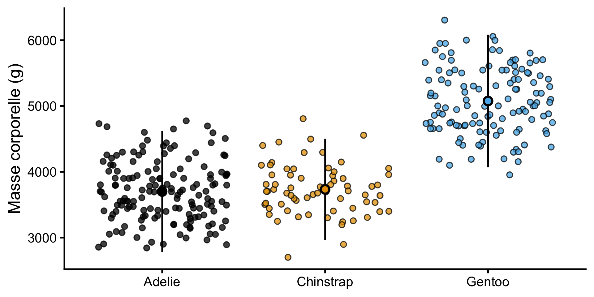
Model
\[ \begin{align} \mathrm{Weight}_i \sim \mathrm{Normal(\mu}_i,~\mathrm{\sigma)} \\ \mu_i = \mu_{\text{species}[i]} \end{align} \]
, où \({\mathrm{species}[i]}\) est l’espèce du manchot \(i\) et \(\mu_\text{species}\) est le poids moyen de cette espèce.
Différence de poids
Voir les coefficients :
Call:
lm(formula = body_mass_g ~ species, data = penguins)
Residuals:
Min 1Q Median 3Q Max
-1126.02 -333.09 -33.09 316.91 1223.98
Coefficients:
Estimate Std. Error t value Pr(>|t|)
(Intercept) 3700.66 37.62 98.37 <2e-16 ***
speciesChinstrap 32.43 67.51 0.48 0.631
speciesGentoo 1375.35 56.15 24.50 <2e-16 ***
---
Signif. codes: 0 '***' 0.001 '**' 0.01 '*' 0.05 '.' 0.1 ' ' 1
Residual standard error: 462.3 on 339 degrees of freedom
(2 observations deleted due to missingness)
Multiple R-squared: 0.6697, Adjusted R-squared: 0.6677
F-statistic: 343.6 on 2 and 339 DF, p-value: < 2.2e-16| Espèce | Moyenne réelle | Calcul avec coefficients |
|---|---|---|
| Adelie | 3701 | 3700.66 |
| Chinstrap | 3733 | 3700.66 + 32.43 = 3733.09 |
| Gentoo | 5076 | 3700.66 + 1375.35 = 5076.01 |
Différence de poids
Pour voir l’impact de l’espèce sur le poids :
Analysis of Variance Table
Response: body_mass_g
Df Sum Sq Mean Sq F value Pr(>F)
species 2 146864214 73432107 343.63 < 2.2e-16 ***
Residuals 339 72443483 213698
---
Signif. codes: 0 '***' 0.001 '**' 0.01 '*' 0.05 '.' 0.1 ' ' 1ANOVA peut être considérée comme une régression sans pentes !
Mais comment les groupes diffèrent-ils ? Quelle espèce est plus lourde que les autres ?
Attendez la semaine prochaine : Tests post-hoc
Modèles statistiques et Tests
Les tests statistiques que vous connaissez peuvent être unifiés dans le cadre de modèles statistiques linéaires !
| Nom du test | Cadre du modèle linéaire |
|---|---|
| Régression | 1 variable explicative numérique |
| Test t | 1 variable explicative catégorique avec 2 niveaux |
| ANOVA | 1 variable explicative catégorique avec > 2 niveaux |
À vous de jouer
- Allez sur le site du cours
- Allez au calendrier
- Cliquez sur
TP 03 - Connectez-vous à Posit Cloud